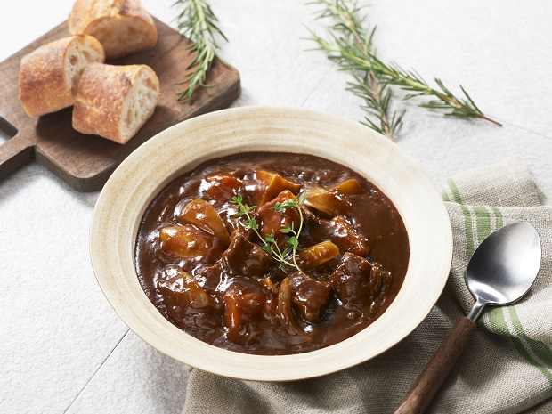

Brown Stew

A Japanese take on European stew.
Ingredients
- Tasty brown stew block
- protein of choice
- 1 medium sized sweet onion
- 3 small yukon potatoes
- 1 good sized carrot
- 2.5 cups of water
Steps
- Stir-fry the meat and vegetables well with oil. (Approx. 5 min. over medium heat)
- Add the water and once it comes to a boil, turn down to low heat.
Put a lid on the pot leaving a small gap between the lid and pot and simmer until the ingredients become soft.
(Approx. 30 min. over low heat after mixture comes to a boil)
- Turn off the heat, then break the S&B Tasty Brown Stew Mix into pieces, and stir until the pieces are completely melted.
Simmer on low heat for approximately 5 minutes.
- Serve hot with rice or bread of your choice.